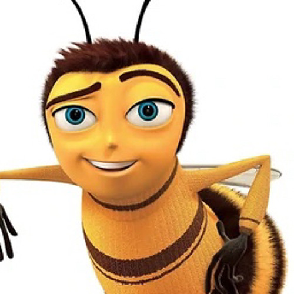

Barry B. Benson
Hive City, Bee Central Park
Email: BarryBenson@beemail.com
Phone: (555) 123-BUZZ

Objective
Passionate and dedicated former honey acquisition specialist transitioning into environmental law. Committed to advocating for environmental conservation and the rights of pollinators. Seeking to leverage my unique experience and skills in a dynamic legal environment.
Education
- Juris Doctor (J.D.), Hive University, School of Law
- Bachelor of Science in Environmental Studies, Honeycomb College
Legal Experience
Legal Intern, Pollinator Rights Advocacy Group
- Assisted in the research and drafting of briefs and legal documents.
- Participated in client meetings and provided legal advice on environmental law issues.
Volunteer Legal Advisor, Save the Flowers Initiative
- Provided pro bono legal advice on environmental protection and conservation.
- Helped in organizing community awareness programs about pollinator protection.
Professional Experience
Honey Acquisition Specialist, Honex Corporation
- Managed and optimized honey production processes.
- Worked on suitable honey extraction methods to minimize environmental impact.
- Advocated for worker bee rights and improved working conditions.
Skills
- Strong research and analytical abilities.
- Excellent communication and negotiation skills.
- Proficient in legal writing and documentation.
- Knowledge of environmental laws and communication.
- Ability to work effectively both independently and as part of a team.
Achievements
- Successfully argued a landmark case for the rights of bees to benefit from their honey (as depicted in The Bee Movie).
- Implemented a sustainable honey harvest program at Honex, reducing environmental impact by 30%.
- Organized the "Flowers Forever" campaign, raising awareness about the importance of pollinators & their effect on the environment.
References
Available upon request.